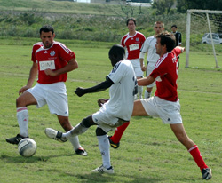
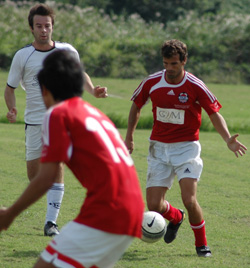
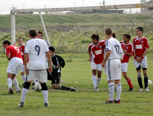
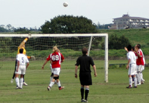

|
Misato, Saturday 6th October,
Sala picked up their first points of the season against BEFC with a comfortable but not convincing display against last year’s TML 2 champions.’
The pitch, which was being used for the first time since being completely flooded during the last big typhoon, had a hard crust, but was slick with mud underneath which would barely take a stud. Not the best news for Ronald, who had turned up wearing trainers.
This certainly didn’t seem to dispirit the Ugandan though, as he put in a stellar opening ten minutes on the right flank, carving chance after chance for the boys in white. The best of these was blasted into the side netting by Toby from close range; unusually wasteful from one of Sala’s more consistent goal-scorers. But not as glaring a miss as AJ forgetting to write about Brian G’s surgical scrubs in the Nagano match report. You didn’t think you’d gotten away with it did you Bris? Blue, they were.
Back to the game though, and Ronald decided to do the job himself the next time. After nice interplay with Dhugal on the edge of the box, he tapped a slow burning shot that rolled into the bottom left corner of the net, to just about everyone’s surprise.
BEFC were playing very high -almost to the half way line in the first half- and this gave the Sala midfield the chance to knock it over the top and use Dhugal’s pace. Shigeru did this to perfection just a few minutes after the first goal and Dhugal ran on with far more time than he seemed to be comfortable with, to ram a side-footed shot high into the net on the keepers left. The linesman decided to put his flag up, despite the striker being (a) in his own half, and (b) well behind the man who was marking him. Quinton however decided that these two points shouldn’t be so breezily overlooked and let the goal stand. To be fair to the linesman in question, he must have been pretty damn hung-over, because later on he didn’t even notice when he had been subbed on and needed at least three of his teammates screaming in his face before he woke from his stupor and took to the field.
At this point, Sala entered Phase 2 although it was anyone’s guess what that was. It certainly seemed a bizarre time to end what had (unknowingly) been an excellent Phase 1, and one wondered what heights Phase 3 could send us to. It didn’t seem to confuse Dhugal though, as he used his immense upper body strength (Cultured from years of typical Aussie over appealing on the cricket field) to hold off a defender and place an excellent finish past the keeper from the edge of the box.
Ronald spent more of the first half on the floor than Miki Ando during her last ice skating perfor… I mean rather, spent more time on the floor than Rocky Balboa in his fight against Ivan Drago. I don’t watch ice skating, obviously. Except that Disney Princesses on Ice thing, top stuff that…
Second half. I came on, which was by far the most important thing to have happened in the game until this point. Also Sam, Garcia, Kentaro and Giles took to the field at various times in the second half. Kentaro showed some nice touches, suggesting he could be a bit of a future star, whilst Sam got stuck right in on the left in very British fashion. Garcia seemed to sub on and off the pitch more times than I could count in the second half, whilst Giles, despite the crumbling knees, made several excellent tackles towards the end.
Anyway back to me. Quick ball over the top from Shig, bouncing away from goal on the corner of the penalty box, on my left foot, no support, bang, it’s in. One lob a season, check.
Next up, good ball in from Sam or Toby or Dhugal, one of the water carriers anyway. Arch my back, good contact, textbook overhead kick goes inches wide of the top corner. One random and very close (but never close enough) overhead kick a season, check. My work is done.
On a more serious note, BEFC did get a goal back. Yusuke’s miscued clearance let in Steve Lidbury who raced away and gave Sid no chance with an excellent lob, bit of a sour note for Sala that, but overall a pretty solid performance. Brookey’s decision to play Ian in centre-mid alongside the un-tacticationable one, Shigeru, was vindicated with a top performance from both, while Lenny and Dan also looked strong in the wide defensive roles.
Next up Vags.
Report by Lethargio
|